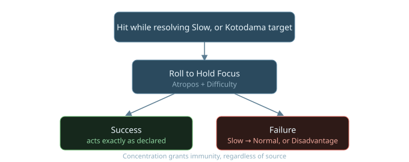
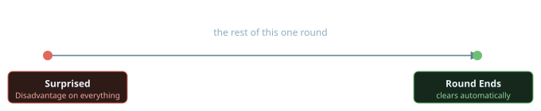
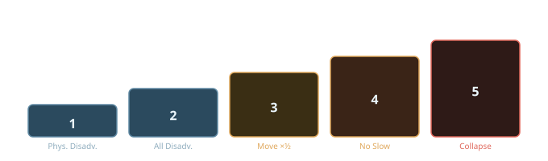

Status Effects
Every status effect currently defined in the system - what triggers it, what it does, and how it clears. This isn't necessarily a permanently closed list; more may be added as the rules keep developing.
Distracted
Trigger: losing a Health Level, or being the target of a Kotodama effect, while resolving a Slow Action Bracket action. A Gift, an environmental hazard, or GM fiat can also impose it directly, whether or not a Slow action is involved.

Effect: if the trigger happened during a Slow action, failing the roll downgrades that action to a Normal one, losing the called-shot option and the Advantage that made it Slow in the first place. Outside a Slow action, failure instead imposes Disadvantage on whatever triggered it.
Clears: resolved immediately by the roll itself - success or failure, there's nothing lingering afterward. Concentration grants immunity to being Distracted, regardless of the source.
Surprised
Trigger: not noticing a threat before combat begins - typically because an opposing Stealth roll beat your Perception, or the GM judges the fiction calls for it.
Effect: Disadvantage on everything - attacks, and any other roll where being ready matters - for the rest of the round you're caught in.

Clears: automatically, once that round ends - no roll needed. Alertness grants immunity to being Surprised while conscious.
Flustered
Trigger: your Poise reaching 0.

Effect: Disadvantage on all Social rolls, and on anything else where composure matters (GM's call), for the rest of the Scene.
Clears: lasts the rest of the Scene by default, but you can spend an action to roll Presence against a Difficulty and end it immediately on success. No Gift currently grants immunity to Flustered - intentional.
Overwhelmed
Trigger: your Sanity reaching 0.

Effect: a temporary negative mental trait, plus Disadvantage on your rolls. You can still act on your own.
Clears: once you're removed from whatever caused it and get a chance to rest, or by spending 1 Ki - which also refills Sanity back to full.
Shattered
Trigger: your Sanity dropping below 0.
Effect: panicky, babbling, unable to act on your own - someone has to lead or drag you.
Clears: the same two ways as Overwhelmed - removal-plus-rest, or 1 Ki - but either one only restores Sanity to 1, not fully; normal recovery resumes from there. Dropping below 0 always leaves a permanent mental scar, even if you recover with Ki.
Exhausted
Trigger: pushing a sustained physical exertion (forced marching, hard labor, running flat-out) past its free baseline duration, set by your Stamina. Each additional unit of time beyond that baseline requires a roll.
Effect: cumulative, stacking one level at a time on a failed check:

| Level | Effect |
|---|---|
| 1 | Disadvantage on Physical rolls |
| 2 | Disadvantage on all rolls |
| 3 | Movement Rate halved |
| 4 | Can't take Slow actions |
| 5 | Collapse - unconscious, can't act until rested |
Clears: a Short Rest drops one level; a Full Night's Rest clears it entirely - the same Short/Full split Health Level recovery uses.